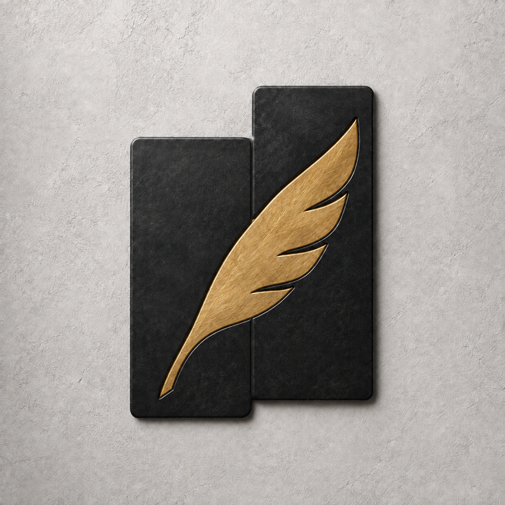

Write it. Sketch it.
Write, highlight, and sketch with Apple Pencil on A4 pages. Choose your ink, zoom in, and give an idea the detail it deserves.

BadnotesA NOTEBOOK FOR IPAD
From a quick scribble to a notebook of ideas. Write and sketch with Apple Pencil, then put your pages in order, at your own pace.
Explore BadnotesIn development · Not yet available on the App Store
SPACE TO THINK
A place to write, organize, and share what’s on your mind.
Write, highlight, and sketch with Apple Pencil on A4 pages. Choose your ink, zoom in, and give an idea the detail it deserves.
Create multipage notebooks, add and reorder pages, and bring in selected photos. Give each subject its own title and cover.
Export a whole notebook as a PDF, or a single page as PDF, PNG, or JPEG. Send it where you choose with the system share sheet.
YOUR NOTES, YOUR CHOICE
Notebooks are stored on your device, without an account. Badnotes has no ads, third-party tracking SDKs, or cloud sync. You choose what to export and share.
Read the privacy policyA WORK IN PROGRESS
Badnotes is in development and closed testing for iPadOS 26 or later, with English and Traditional Chinese interfaces. A public download link will appear here when available.
Questions & feedback · GitHub IssuesIssues are public. Please leave out private notes and personal information.